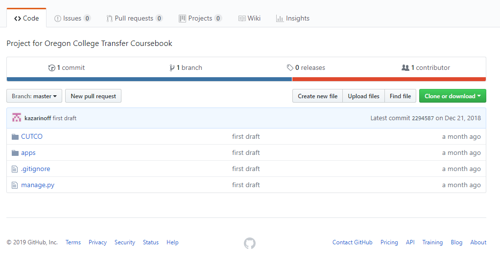
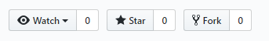
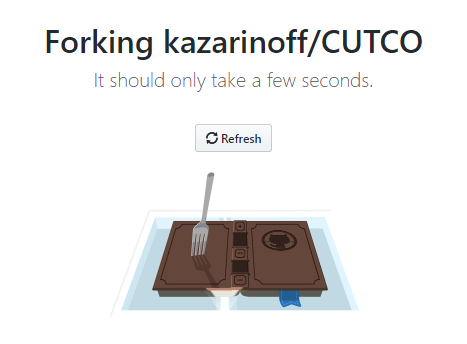
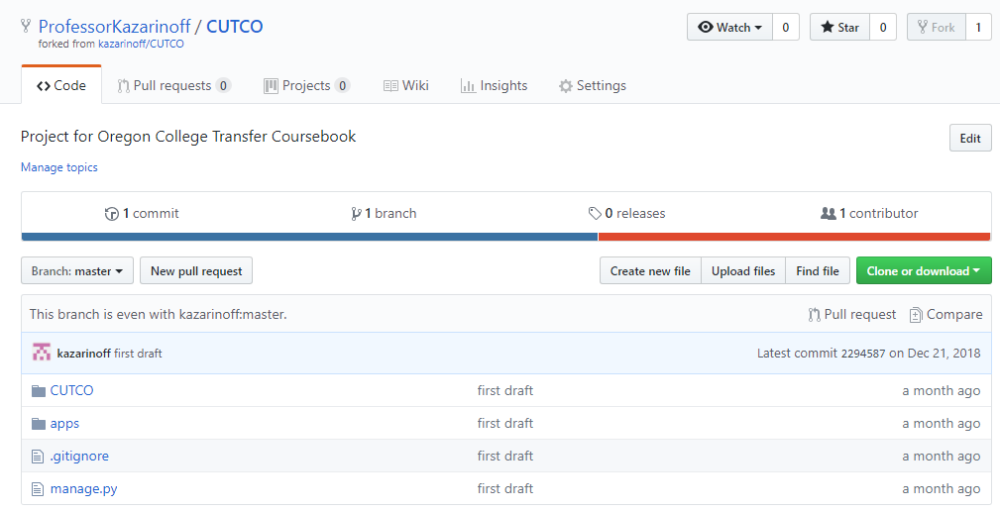
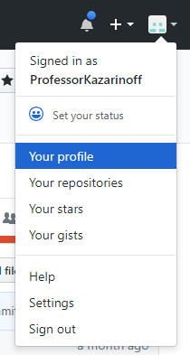

In this post, I'll show you how to submit a pull request on Github. I am working on a project with another Python programmer. We booth want to contribute code to the project. The other programmer is the maintainer of the project, and I am a contributer. This means any changes I make to the project need to be approved by the other maintainer.
The packages and tools used in this post are:
- git - a version control system run form the command line. git is used to push code up to GitHub (and other cloud-based code repositories) so that the code is consistant across different computers.
- Anaconda Prompt - a command line tool used to create Python virtual environments and install Python packages. The Anaconda Prompt can also run git commands. The Anaconda prompt comes included when you install Anaconda or Miniconda
- GitHub.com - a website used to store and share code online. You can sign up for a new GitHub.com account here: https://github.com/join
Creating and submitting a pull request on GitHub requires a couple of steps:
- Create an account on Github.com and login
- Fork the repo you want to make the pull request to
- Download the forked repo onto your local machine
- Make the changes to the project on your local computer
- Make the changes to the project on your local computer
- Commit and push the changes made on the local computer up to the forked repo on GitHub.com
- On GitHub.com, recreate the pull request, add a message, and send
- Check out the project owner's GitHub repo and see your pull request
- Wait for the project owner to accept your pull request
- Summary
Create an account on Github.com and login
In order to submit a pull requrest on GitHub.com, you first need to have a GitHub.com account. Sign up for a GitHub.com account here. Once you have a GitHub.com account, log into GitHub with your username and password.
$ cd notebook-conversion
$ pwd
~/notebook-conversion
$ conda activate convenv
(convenv)$ pip install pre-commit
Fork the repo you want to make the pull request to
Now that you are logged into GitHub.com, you need to browse to the project that you want to send the pull request to. In my case, the project I want to submit the pull request to is a project built to provide community college engineering transfer students a way to see how their community college classes transfer to 4-year Universities. A screen capture of the repo is below. Note that the repo you submit the pull request to is not a repo you own. The repo you submit the pull request to is a repo someone else owns.

Next, you need to fork the repo from the user that owns it. Forking the repo means that a seperate copy of the repo ends up in your GitHub.com account. To fork someone else's repo into your GitHub.com account, click the [Fork] button in the upper right-hand side of the repo's main page

It will take a couple seconds for GitHub.com to complete the forking process. You may see a message like the one below:

When the forking process is complete, you are brought to your GitHub profile and in the main page of the forked repo. Note the username after github.com/ is now your username and note that the page title contains YourUsername/Forked_Repo_Name at the top.

You can also go to your main GitHub.com page by clicking the "Profile" button (the square button in the upper right corner) or by browsing to github.com/username where username is your GitHub.com username

Download the forked repo onto your local machine
Now that the forked repo is one of the repos listed on our GitHub.com profile, we need to copy the repo from GitHub.com to our local computer. We need to copy the forked repo to our local computer so that we can work on the project and make change to the project. The changes we make to the project are the changes that we'll submit in our pull request to the original project maintainer.
Open a terminal or the Anaconda Prompt and create a new directory for the project on your local machine. cd into this new project directory. In my case, I will create a new directory called CUTCO in my Documents folder. You can name the project directory anthing you like, but it is a good idea to keep the name of the GitHub repo you forked in the prevous step.
$ cd Documents
$ mkdir CUTCO # project name
$ cd CUTCO
$ pwd
/c/Users/user.name/Documents/CUTCO
After the project directory has been created, and you know you are inside it, initiate the project directory as a git repository and pull down the most recent version of the project from your forked repo. Note that you pull down the version of the forked repository from your profile. You don't pull down the original version of the project from the project maintainer's repository.
$ git init
$ git remote add origin https://github.com/ProfessorKazarinoff/CUTCO.git
$ git pull origin master
$ dir # or ls
# see the project contents that are on Github.com
Make the changes to the project on your local computer
Now that the forked repo has been pulled down to your local computer, you can go about working on the project. You can make the changes to the project on your local computer that you want to submit the pull request for. In my case, I am going to add a requirements.txt to the project. The requirements.txt file contains the required packages to run the project. A requirements.txt file can be created with the pip freeze command. I'll also modify the .gitignore file to include the .gitignore for Visual Studio Code and PyCharm. Visual Studio Code (or VS Code) and PyCharm are two editors that I use to write Python code. The .gitigore for VS Code and PyCharm are added to the .gitignore file so that none of the settings I use with these two editors gets shared with the project.
(env)$ pip freeze > requirements.txt
# .gitignore
.... # lines added at the bottom
### VS Code ###
.vscode/*
!.vscode/settings.json
!.vscode/tasks.json
!.vscode/launch.json
!.vscode/extensions.json
### PyCharm ###
# Covers JetBrains IDEs: IntelliJ, RubyMine, PhpStorm, AppCode, PyCharm, CLion, Android Studio and WebStorm
# Reference: https://intellij-support.jetbrains.com/hc/en-us/articles/206544839
# User-specific stuff
.idea/**/workspace.xml
.idea/**/tasks.xml
.idea/**/usage.statistics.xml
.idea/**/dictionaries
.idea/**/shelf
# Generated files
.idea/**/contentModel.xml
... # more JetBrains .gitignore lines
Make the changes to the project on your local computer
Now that the forked repo has been pulled down to your local computer, you can go about working on the project. You can make the changes to the project on your local computer that you want to submit the pull request for. In my case, I am going to add a requirements.txt to the project. The requirements.txt file contains the required packages to run the project. A requirements.txt file can be created with the pip freeze command. I'll also modify the .gitignore file to include the .gitignore for Visual Studio Code and PyCharm. Visual Studio Code (or VS Code) and PyCharm are two editors that I use to write Python code. The .gitigore for VS Code and PyCharm are added to the .gitignore file so that none of the settings I use with these two editors gets shared with the project.
Commit and push the changes made on the local computer up to the forked repo on GitHub.com
After the changes made to the project files locally are complete, you need to commit and push the changes up to your repo (the forked repo in your profile) on GitHub.com
$ git add requirements.txt
$ git add .gitignore
# could also do git add . to add all files
$ git commit -m "added requirements.txt and added PyCharm and VS code to .gitignore"
$ git push origin master
Now when you go to GitHub.com and look at the forked repo in your profile, you can see the changes you made. In my case, the changes added a new requirements.txt file and modified the .gitignore file.
On GitHub.com, recreate the pull request, add a message, and send
Now that the changes you made locally are saved up in your forked repo on GitHub.com, you can create the pull request for your changes to be added to the originol repo on the other developers profile. In my case this means that I think the changes to the .gitignore file and the addition of the requirements.txt file should be added to the main project owned by the other developer. The pull request does not enact my changes (like the git push earlier which did change the files in my GitHub forked reop), the pull request only notifies the owner of the project that the changes I made are requested to be added. It is up to the owner of the project to accept the changes I made and incorporate my proposed changes into the project.
Go to your profile on GitHub.com and select the repo you forked earlier and just pushed a change up to. Click the [New Pull Request] button.
On the pull request page, note that the changes you made are requested to go into the owners master branch.
Write a nice detailed message in the message box. You want to give the owner of the repo a really good idea of what you are proposing to add to their project. In my case, I let the owner know that I changed the .gitignore file and added a requirements.txt file.
Push the [Submit Pull Request] Button and send the request off to the owner of the project
Check out the project owner's GitHub repo and see your pull request
The pull request you just made gets sent to the owner of the project you make the pull request to automatically. You can see the pull request you just made in the project owner's GitHub page for the the project.
Wait for the project owner to accept your pull request
The next step is to wait. The owner is now in control of your pull request. The owner of the project can accept the pull request or the owner of the project can deny the pull request. If the owner of the project accpts the pull request, the changes you proposed will become part of the originol project. If the owner does not accept the pull request, then the changes you proposed do not become part of the project. This decision is up to the project owner, not up to you. It is also up to the project owner how long they want to wait before the pull request is included
Summary
In this post, we submitted a pull request to GitHub.com. The process to submit a pull request requires a couple steps:
- Sign up for a GitHub.com account and login to GitHub.com
- Go to the repo you want to submit the pull request on GitHub.com
- Fork the repo into your GitHub profile
- Create a local folder and pull in the forked repo from GitHub.com onto your local computer
- Make changes to the project locally
- Add, commit and push the local changes up to your forked repo on GitHub.com
- In your forked repo on GitHub.com, click the [New Pull Request] button. Add a commit message and submit the commit
- View your pull request on the owner's GitHub.com project page
- Wait for the owner of the project to accept or reject the pull request